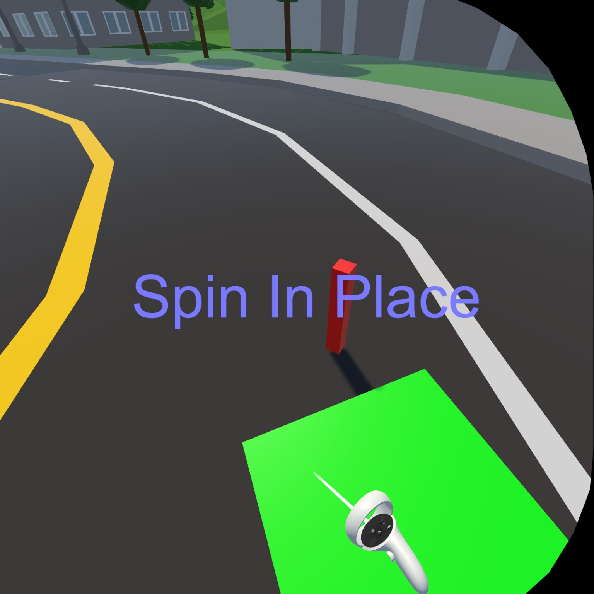

From Start to Finish
A Summary - Now In HD
 The complete playthrough's thumbnail
The complete playthrough's thumbnail
Welcome to the complete summary of my project VR-Redirected-Winter as part of the lecture Interaction in Augmented & Virtual Reality!
In here I get straight to the points to make it less time-consuming to see it all, if you’re into that.
And without further ado …
Introduction & Motivation
So the idea was to transverse a parkour in VR or AR with a locomotion and an interaction technique, which we should implement ourselves. I chose to work on redirected walking, because I found it quite appealing to explore a limitless virtual world in a narrow physical space - without even noticing that it is that narrow. Therefore, my initial idea can be seen in the image above. I wanted to remove the parkour’s ground and summon ethereal bridges to span this abyss. And because they are ethereal they can lead anywhere, giving the player the freedom to explore anywhere he chooses, experience a vast world from a small physical space.
Problem Statement
The specific challenge I set for myself was to get my redirected walking to work in the space available to me - roughly ONE whole square meter. Of course without it being imperceptible, because that would require a lot more space. I wanted to give my players a sense of freedom to explore, locomotion unbound by their physical space or the direction they want to explore in (well except the sky, because I didn’t add any flying).
For more insight into my ideas and initial project directions, take a look at Ideas & Project Direction.
Solution
Since this was my first ever project with Unity and a Meta Quest, I started out by setting them both up and familiarizing myself. Wasn’t as easy as I had hoped. Check out Unity & Quest Setup, if you’re interested.
First Staging & Motion
Since I was trying to keep my player in a limited physical space for my redirected walking to work, I started out by creating a custom play area with a controller within the guardian boundaries.
Wasn’t fun.
Once I had that, I tried to use the Redirected Walking Toolkit to use my now physically tracked space.
Wasn’t fun either.
(To be honest both kind of were, but they were also really frustrating since I had hoped that most of the work would have already been done by others.)
Finally, both kind of worked and I took my first steps on the parkour:
Painful, mind-numbingly slow steps …
Acceleration & Interaction
So after the interim presentations I got the idea to utilize only this part of the redirected walking, I had gotten to work, as a game mechanic. The turning reminded me a little of ice skating, so I went ahead and gave my players a little push on completing their turns.
With this out of the way, I experimented with the direction of the push - and quickly settled on gaze controlled, because slowing down in a direction you’re not faced without the feeling of acceleration was quite unpleasant. I also added a dynamic field of view to further reduce motion sickness. See Locomotion Technique for more details.
I still had an interaction to implement and I wanted to stay within my paradigm of free exploration.
So I went for a ray cast from the palm of the players right hand (and eventually hid the ray).
 I split the function of aiming and selecting between both hands to increase the accuracy, because I noticed that the jiggle of my ray from pinching often led to me missing my mark.
For an in-depth look at this go to Interaction Technique.
I split the function of aiming and selecting between both hands to increase the accuracy, because I noticed that the jiggle of my ray from pinching often led to me missing my mark.
For an in-depth look at this go to Interaction Technique.
Play Area Selection Rework & Beautification
With my interaction in place, I went back and reworked my play area selection to be up to my new standards. I switched the controller selection to ray casting, hid the ray and added gesture detection to still have more than one button. All quite slick I might add.
I also made it a consistent game.
Since I had my locomotion’s analogy to ice skating, I implemented a winter theme.
For this I added a snow shader, changed the soundscape, added app icons, and replaced the coins with snowflakes.
(See Making it Pretty.)

After the final presentation I realized, that apparently my game in combination with my verbal instructions wasn’t as intuitive to understand as I had assumed. So I created tutorials for the play area creation, the locomotion, and the interaction. (See In-Game Tutorial.)
Implementation Details
The largest challenges throughout the project were the Boundaries and the Redirected Walking or the partial lack thereof.
Boundaries
I tried to retrieve the guardian boundaries, that the headset has to have to enter virtual reality anyway. Unfortunately, the OVRManager’s boundaries did not match the real ones. No matter how many different approaches I tried, how many Stack Overflow entries I read, I didn’t get it to work. Not any more than that I’d get some local boundaries, that didn’t line up even remotely with the actual guardian.
So I switched to the approach, that the players have to create the boundaries themselves. For this I had them place markers on the ground to enclose an area themselves.
Since the Redirected Walking Toolkit worked with a rectangular physical space, I created the largest interior rectangle within the enclosed area. After trying to implement this myself, I gave up on it and just used a pre-existing C# implementation. 
Two-One-Resetter
My second large challenge was the utilization of the Redirected Walking Toolkit - or my inability to do so. After initial problems and then getting the original Unity version, I dove into understanding the toolkit’s structure. Unfortunately, it had grown as a research project. Therefore, it lacked documentation, had large sections commented out, and was actually designed for modularity, which added another layer of complexity. I only managed to get the resetter to work. The resetter is designed to steer the player back into the play area if he manages to walk out of it. To be fair, with my space limitation that would have been all the time anyway. The resetter I got to work was a two-one-resetter. Physically you turn by 180 degrees, while virtually you turn a full 360 degrees. Through this you’re able to keep walking in your original virtual direction while returning to your play area. After the interim presentations, I got the idea of utilizing the resetter as my core game mechanic, a little like ice skating. So my inability to fully integrate the toolkit gave rise to a new mechanic based on the resetter. And it still solved my original challenge of free locomotion in a really limited physical space. I added a little push to on completion of the reset so you wouldn’t take forever transversing the parkour.
For more details also check out Locomotion Technique.
Evaluation
Because my developmental focus was on my locomotion, I chose to keep my measurements simple. I recorded the total time and the total coins collected. I also had my participants fill out the Virtual Reality Sickness Questionnaire (VRSQ), to measure the impact of my locomotion on them.
Including myself I had four participants, all students between 19 and 24. As you can see, my time falls severely out of the range established by my other three participants. This suggests, that significant improvement might be gained by training with this locomotion technique.
Overall, the VRSQ consists of the average of the oculomotor discomfort and the disorientation scores. The oculomotor discomfort was often higher than the disorientation when using my locomotion. This might suggest, that the games performance wasn’t adequate, since oculomotor discomfort can easily be caused by this. But overall, the highest VRSQ score at 35 and an average of 20 out of 100 are quite the success for my locomotion.
For a more in-depth description of my evaluation have a look at Testing it on Unsuspecting Friends.
Conclusion
In conclusion, I think my system solved the challenge I set for myself. It was quite off from my original idea, but I managed to implement a locomotion that allows free exploration from a small physical space.
Overall, I’ve learned that toolkits don’t necessarily make it easier to achieve one’s goal. Especially, when they haven’t been updated in a while and when they were not specifically designed for the exact task you want to use them for. But more importantly, I think I’ve learned how to use Unity even in the face of frustration - a skill that surely will come in handy.
Video
Here’s the video of my complete playthrough.
Enjoy it!
If you want to try the game for yourself, download the apk here.